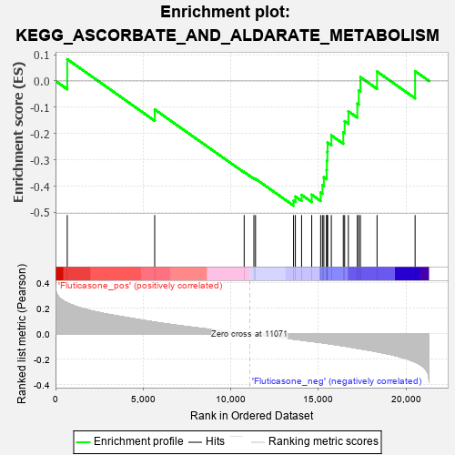

| | | Dataset | GSEA_expr_Flu.GSEA_timepoint.cls#Fluticasone |
| Phenotype | GSEA_timepoint.cls#Fluticasone |
| Upregulated in class | Fluticasone_neg |
| GeneSet | KEGG_ASCORBATE_AND_ALDARATE_METABOLISM |
| Enrichment Score (ES) | -0.4741114 |
| Normalized Enrichment Score (NES) | -1.0805445 |
| Nominal p-value | 0.42797494 |
| FDR q-value | 1.0 |
| FWER p-Value | 0.978 |
Table: GSEA Results Summary

Fig 1: Enrichment plot: KEGG_ASCORBATE_AND_ALDARATE_METABOLISM
Profile of the Running ES Score & Positions of GeneSet Members on the Rank Ordered List
| PROBE | DESCRIPTION
(from dataset) | GENE SYMBOL | GENE_TITLE | RANK IN GENE LIST | RANK METRIC SCORE | RUNNING ES | CORE ENRICHMENT | | 1 | MIOX | NA | | | 670 | 0.244 | 0.0827 | No |
| 2 | ALDH3A2 | NA | | | 5658 | 0.092 | -0.1085 | No |
| 3 | ALDH1B1 | NA | | | 10761 | 0.004 | -0.3462 | No |
| 4 | ALDH2 | NA | | | 11316 | -0.004 | -0.3704 | No |
| 5 | UGT2B28 | NA | | | 11409 | -0.005 | -0.3723 | No |
| 6 | UGT1A8 | NA | | | 13577 | -0.041 | -0.4548 | Yes |
| 7 | UGT2B17 | NA | | | 13681 | -0.043 | -0.4396 | Yes |
| 8 | UGT1A9 | NA | | | 14036 | -0.049 | -0.4333 | Yes |
| 9 | UGT1A1 | NA | | | 14614 | -0.060 | -0.4324 | Yes |
| 10 | UGT1A6 | NA | | | 15123 | -0.068 | -0.4243 | Yes |
| 11 | UGT1A10 | NA | | | 15226 | -0.070 | -0.3963 | Yes |
| 12 | UGT2B10 | NA | | | 15306 | -0.072 | -0.3663 | Yes |
| 13 | UGT2B15 | NA | | | 15464 | -0.075 | -0.3385 | Yes |
| 14 | UGT1A3 | NA | | | 15476 | -0.075 | -0.3038 | Yes |
| 15 | UGT2B7 | NA | | | 15506 | -0.076 | -0.2696 | Yes |
| 16 | UGT2A3 | NA | | | 15519 | -0.076 | -0.2345 | Yes |
| 17 | UGT2A1 | NA | | | 15733 | -0.080 | -0.2069 | Yes |
| 18 | UGDH | NA | | | 16415 | -0.094 | -0.1946 | Yes |
| 19 | ALDH9A1 | NA | | | 16493 | -0.096 | -0.1531 | Yes |
| 20 | UGT2B4 | NA | | | 16705 | -0.101 | -0.1156 | Yes |
| 21 | UGT1A7 | NA | | | 17214 | -0.113 | -0.0863 | Yes |
| 22 | UGT2B11 | NA | | | 17296 | -0.115 | -0.0361 | Yes |
| 23 | UGT1A4 | NA | | | 17391 | -0.117 | 0.0145 | Yes |
| 24 | UGT1A5 | NA | | | 18341 | -0.141 | 0.0358 | Yes |
| 25 | ALDH7A1 | NA | | | 20511 | -0.221 | 0.0374 | Yes |
Table: GSEA details [plain text format]
Fig 2: KEGG_ASCORBATE_AND_ALDARATE_METABOLISM
Blue-Pink O' Gram in the Space of the Analyzed GeneSet
Fig 3: KEGG_ASCORBATE_AND_ALDARATE_METABOLISM: Random ES distribution
Gene set null distribution of ES for KEGG_ASCORBATE_AND_ALDARATE_METABOLISM